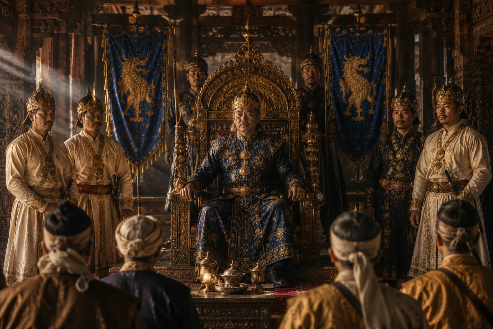

Accession of Susenghphaa (Pratap Singha)
1603 · Against the Mughal Empire

Pratap Singha ascends the throne at Garhgaon, inaugurating decades of revolutionary governance and resistance against the Mughal Empire.
Sources have not yet been catalogued for this record.
People: Pratap Singha (Susenghphaa)
Open this scene in the interactive archive · Follow this event on MAP